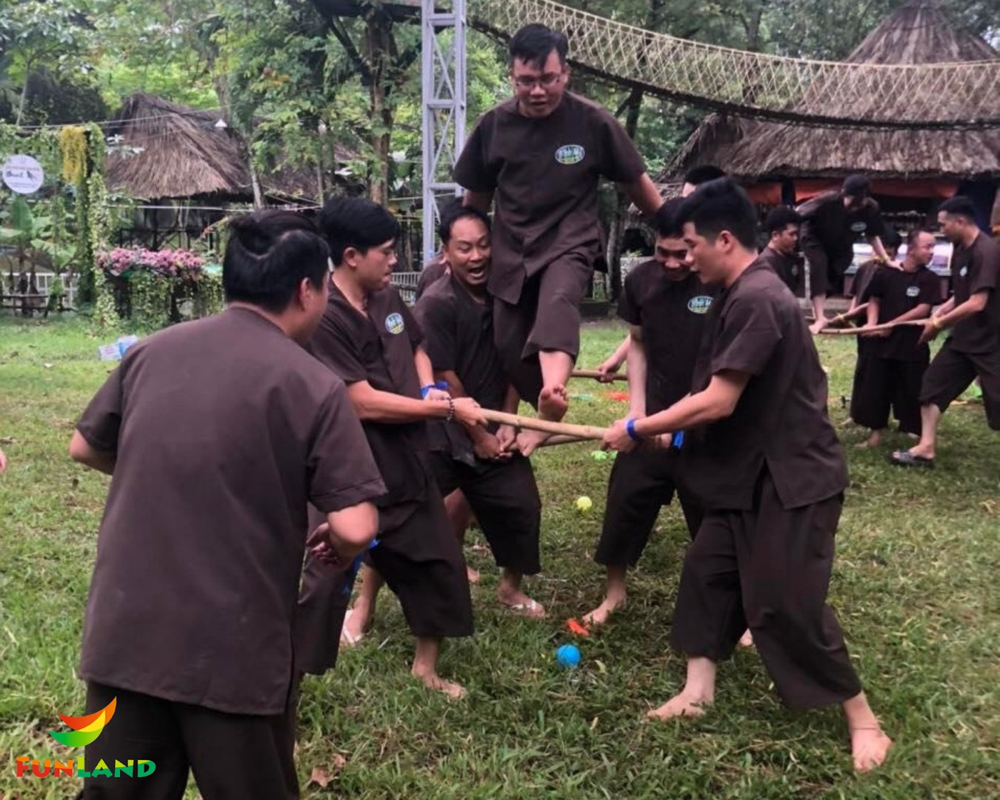
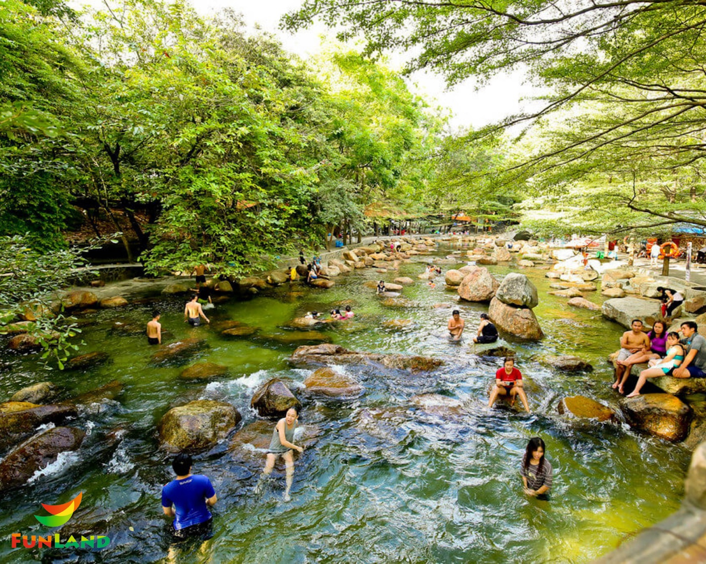

20 Địa Điểm Tổ Chức Team Building Rộng Rãi, Lý Tưởng, Gần Sài Gòn NHẤT
23/10/2023
Nếu bạn còn đang đắn đo trong việc lựa chọn một địa điểm tổ chức team building gần Sài Gòn, thì hãy tham khảo ngay danh sách 20 địa điểm tổ chức team building rộng rãi, lý tưởng, gần Sài Gòn nhất nhé!
1. Làng du lịch sinh thái Funland - Tre Việt
- Địa chỉ: 25 Phan Văn Đáng, Ấp Phước Lương, Xã Phú Hữu, Huyện Nhơn Trạch, Đồng Nai
- Giá vé tham khảo: Người lớn: 150.000đ/người, Trẻ em: 100.000đ/người, Miễn phí trẻ em dưới 0.9m và người trên 80 tuổi
- Ưu điểm: Không gian sinh thái, cảnh quan đẹp và có khu vui chơi nước, sân cát là địa điểm tổ chức team building lý tưởng.
Chỉ với khoảng cách 15km từ trung tâm TP.HCM, Làng du lịch sinh thái Funland - Tre Việt sẽ là điểm đến đầu tiên trong danh sách 20 địa điểm tổ chức team building rộng rãi, lý tưởng, gần Sài Gòn nhất.
Du khách đến đây, sẽ có cơ hội trải nghiệm không gian sinh thái đa dạng từ vui chơi giải trí, ẩm thực và âm nhạc. Trong đó, nổi bật nhất vẫn là những giải trí và ẩm thực bao gồm: nông trại, hồ bơi, sân cát và ẩm thực sông nước,... mang lại buổi team buiilding “cháy” hết mình, và đầy kỷ niệm.
Funland - Tre Việt vinh dự được biết đến là địa điểm có nhiều kinh nghiệm cung cấp dịch vụ team building nghỉ dưỡng cho hàng loạt doanh nghiệp trên khắp khu vực Nam Bộ.
Bằng cả sự tận tâm của nhân viên nơi đây, chắc chắn rằng, Khu du lịch sinh thái Funland - Tre Việt sẽ đem lại những phút giây đẹp đẽ, khó quên cho bạn cùng những người đồng nghiệp!
2. Làng du lịch Bình Quới
- Địa điểm: Bán đảo Thanh Đa, đường Bình Quới, phường 28, quận Bình Thạnh, Tp.HCM
- Giá vé tham khảo: Người lớn: 130.000đ/người, Trẻ em: 90.000đ/người
- Ưu điểm: Không gian sinh thái, rộng rãi, có bãi cỏ để tổ chức team building

Làng du lịch Bình Quới - địa điểm thứ 2 trong danh sách 20 địa điểm tổ chức team building rộng rãi, lý tưởng, gần Sài Gòn nhất, bao gồm 3 cơ sở Bình Quới 1, Bình Quới 2, Bình Quới 3. Nếu bạn đang tìm kiếm một địa điểm tổ chức team building, thì Bình Quới 1 chính là sự lựa chọn lý tưởng nhất, bởi Bình Quới 2 và Bình Quới 3 chủ yếu là khu ẩm thực.
Nơi đây mang nét đặc trưng của miền sông nước Nam Bộ, không gian sinh thái mộc mạc, yên bình, tạo nên cảm giác thư thái cho mỗi du khách tới đây. Du khách có thể tổ chức các buổi team building trên bãi cỏ rộng rãi, xanh mướt, thoáng mát.
Ngoài không gian, và dịch vụ phù hợp để trở thành một địa điểm tổ chức team building lý tưởng, làng du lịch Bình Quới còn có các khu vui chơi như hồ bơi, sân tenis, chèo thuyền,...
3. Khu du lịch ven sông Bình Mỹ - Củ Chi
- Địa điểm: Ấp 4A, xã Bình Mỹ, huyện Củ Chi, TPHCM
- Giá vé tham khảo:
Tàu du lịch 48 chỗ: Khoảng 30.000đ/vé/người, miễn phí cho trẻ em dưới 10 tuổi.
Ghe gỗ 5 người: Khoảng 60.000đ/nửa tiếng, có phao an toàn.
Ghe gỗ 8 người: Khoảng 80.000đ/nửa tiếng, có phao an toàn.
- Ưu điểm: Chỉ cách trung tâm Sài Gòn 20km
Là một địa điểm tổ chức team building lý tưởng chỉ cách trung tâm Sài Gòn 20km, Khu du lịch ven sông Bình Mỹ là một lựa chọn không tồi, thường xuyên được các công ty cùng hội nhóm lui tới để tổ chức team building.

Không gian nơi đây rộng rãi, thoáng mát, mang hơi hướng khu du lịch sinh thái. Tại đây, tập trung đa dạng các loại hình hoạt động như chèo thuyền, câu cá trên thuyền, bờ ao,... Không chỉ vậy, khu du lịch ven sông Bình Mỹ còn có kiến trúc dân dã như chòi tranh, cầu khỉ và hàng dừa rợp bóng mát. Hứa hẹn sẽ là một địa điểm tổ chức team building lý tưởng.
4. VietGangz Glamping Club Sài Gòn - Quận 9
- Địa điểm: 159 Đường Số 5, Long Phước, Quận 9, Thành phố Hồ Chí Minh
- Giá vé tham khảo: Khách lưu trú: 699.000đ/người lớn, Khách không lưu trú: 299.000đ/người/set BBQ
- Ưu điểm: Không gian rộng rãi, thoáng mát, phù hợp camping.
Cách Đền thờ Tổ nghiệp của nghệ sỹ Hoài Linh 100 mét, Vietgangz Glamping Club Saigon là một địa điểm tổ chức team building, cắm trại và vui chơi ngoài trời rộng lớn. Nằm ngay cạnh sông Sài Gòn rộng lớn, không khí nơi đây mát mẻ, cùng bãi cỏ rộng lớn, nơi đây rất thích hợp để du khách có thể “quẩy” hết mình với hoạt động vui chơi đoàn đội.
Tại đây, du khách sẽ có những trải nghiệm thú vị bởi dịch vụ nơi đây như sở thú mini, bãi nướng BBQ ngoài trời, chèo thuyền Sup, câu cá, bắn cung, cưỡi ngựa,... Vậy bạn còn chần chờ gì nữa, mà không tới ngay Vietgangz Glamping Club Saigon để có được khoảng thời gian team building năng động, đầy gắn kết.
5. Khu du lịch Thủy Châu
- Địa điểm: 55 ĐT743A, Bình An, Dĩ An, Bình Dương
- Giá vé tham khảo: Người lớn: Khoảng 80.000đ/người, Trẻ em: Khoảng 40.000đ/người, miễn phí trẻ em dưới 1.2m
- Ưu điểm: Giá cả dịch vụ phải chăng
Du khách sẽ không thể nào bỏ qua điểm đến thứ 5 trong danh sách 20 địa điểm tổ chức team building gần Sài Gòn nhất cho các công ty, bởi không gian sinh thái rộng rãi, và hoàn cảnh mà khu du lịch Thủy Châu đem lại.

Đến với khu du lịch Thủy Châu, du khách sẽ có cơ hội được trải nghiệm dòng nước suối trong lành, mát mẻ nhân tạo, được lọc bằng công nghệ hiện đại và sạch sẽ. Thật thoải mái, khi được ngâm mình trong dòng nước suối mát mẻ, trong lành sau một tuần làm việc mệt mỏi nơi thành thị.
Hãy đến ngay khu du lịch Thủy Châu để được trải nghiệm cảm giác thư giãn từ trong tâm hồn tuyệt vời này, cùng bạn bè, và đồng nghiệp.
6. Khu du lịch Vườn Xoài
- Địa điểm: 537 Đinh Quang Ân, Ấp Tân Cang, Long Thành, Đồng Nai.
- Giá vé tham khảo: 180.000đ/người
- Ưu điểm: Có bãi cỏ xanh tổ chức team building
Với các công ty muốn tổ chức team building gần Sài Gòn, khu du lịch Vườn Xoài là một điểm đến không thể nào bỏ qua. Nơi đây, nổi bật với nhiều trò chơi đặc sắc như bắn súng sơn, trượt cỏ,... Hứa hẹn sẽ là những hoạt động đoàn đội đầy kịch tính và hấp dẫn.
Ngoài các hoạt động giải trí đặc sắc và đầy kịch tính, du khách tới đây có thể đắm mình vào không gian sinh thái đa dạng với khu sở thú, nơi quy tụ của hơn 3000 loài động vật khác nhau sinh sống. Chính bởi vậy, du khách tới đây, còn được trải nghiệm các hoạt động vui chơi giải trí như: cưỡi đà điểu, cho thú ăn,...
7. Khu du lịch sinh thái Long Trung
- Địa điểm: Tổ 7, ấp Long Trung, phường Long Thành Trung, thị xã Hòa Thành, tỉnh Tây Ninh.
- Giá vé tham khảo: 100.000đ - 150.000đ/người
- Ưu điểm: Có nhiều góc chụp ảnh đẹp
Khu du lịch sinh thái Long Trung chính là điểm đến thứ 7 trong danh sách 20 địa điểm tổ chức team building gần Sài Gòn nhất cho các công ty. Nổi bật là địa điểm có hệ sinh thái mang đậm chất miền sông nước Nam Bộ, đa dạng loại hình trò chơi sông nước như: lội xuồng, bóng nước, đua thuyền,...
Nơi đây, hứa hẹn sẽ đem lại cho du khách trải nghiệm về một buổi team building đầy vui nhộn cùng tiếng cười bên bạn bè và đồng nghiệp. Vậy bạn còn chần chừ gì nữa, mà không có một cuộc hẹn với khu du lịch sinh thái Long Trung vào cuối tuần này!
8. Hồ Mây Park
- Địa điểm: 1A Trần Phú, Phường 1, thành phố Vũng Tàu, tỉnh Bà Rịa – Vũng Tàu
- Giá vé tham khảo: Người lớn: 400.000đ/người, Trẻ em (1m - 1m3): 200.000đ/người Miễn phí trẻ em dưới 1m
- Ưu điểm: View đẹp, có không gian tổ chức hoạt động team building
Ngay từ cái tên - Hồ Mây, du khách có thể mường tượng ra khung cảnh tựa như chốn bồng lai tiên cảnh nơi đây. Vị trí địa lý có phần trắc trở, nhưng chính yếu tố ấy góp phần tạo nên khung cảnh nơi đây lúc chiều tà.
Còn gì thư thái hơn, khi vào mỗi buổi chiều tà, du khách sẽ được trải nghiệm cảm giác ngâm mình trong hồ bơi có áng mây trắng lượn lờ xung quanh. Được điểm tên trong danh sách 20 địa điểm tổ chức team building rộng rãi, lý tưởng, gần Sài Gòn nhất, Hồ Mây Park ngoài vẻ đẹp mỹ miều của nó còn có dịch vụ hoạt động giải trí như: sân bãi team building, tennis, cắm trại, cưỡi ngựa thưởng ngoạn,...
9. Khu du lịch The BCR
- Địa điểm: 191 đường Tam Đa, P.Trường Thạnh, Quận 9, TP. Hồ Chí Minh
- Giá vé tham khảo: Người lớn: 60.000đ/người, Trẻ em: 40.000đ/người
- Ưu điểm: Giá cả hợp lý, khu vui chơi rộng rãi
Là địa điểm tổ chức team building gần Sài Gòn, khu du lịch BCR chỉ cách trung tâm thành phố Hồ Chí Minh 45 phút đi xe. Nơi đây được tích hợp đa dạng loại hình hoạt động như bắn súng sơn, cắm trại… Đặc biệt, nơi đây có hồ bơi trải dài 63m, 1000m2, nằm ngay cạnh sông Tắc. Hồ bơi được chia thành 5 làn bơi, bao gồm khu vực cho trẻ em và người lớn
Ngoài ra, khu du lịch BCR còn sở hữu bãi cỏ rộng rãi, một địa điểm lý tưởng để tổ chức team building, các hoạt động đội nhóm đầy hấp dẫn, và thú vị. Nơi đây hứa hẹn sẽ là một trong những địa điểm tổ chức team building gần Sài Gòn nhất cho các công ty thú vị, lý tưởng ở miền Đông Nam Bộ.
10. The Amazing Bay
- Địa điểm: An Hòa, Long Thành, Đồng Nai
- Giá vé tham khảo: Người lớn: 450.000đ/người, Trẻ em: 250.000đ/người
- Ưu điểm: Nhiều trò chơi nước hiện đại
Nổi danh là một khu vui chơi nước đang làm mưa, làm gió trong những thời gian gần đây. The Amazing Day là điểm đến tiếp theo trong danh sách 20 địa điểm tổ chức team building rộng rãi, lý tưởng, gần Sài Gòn nhất.
Nơi đây đa dạng với các loại hình trò chơi nước mang hơi hướng hiện đại như sóng thần nhân tạo, biển nhân tạo, trượt ống tốc độ cao,... Du khách tới đây có thể tổ chức hoạt động team building trên bãi biển nhân tạo bởi lợi thế về bãi cát rộng rãi, thoáng đãng.
Tuy chỉ là một địa điểm mới trong “làng” địa điểm tổ chức team building gần Sài Gòn, nhưng The Amazing Bay hứa hẹn sẽ đem lại cho du khách những trải nghiệm khó quên cùng bạn bè và đồng nghiệp.
11. Khu du lịch Tân Cảng
- Địa điểm: A100 Ung Văn Khiêm, Phường 25, Quận Bình Thanh, Thành phố Hồ Chí Minh
- Giá vé tham khảo: Vé vào cổng miễn phí, Giá dịch vụ: 100.000 - 1.000.000đ
- Ưu điểm: Bãi cỏ tổ chức team building rộng lớn
Chỉ với hơn 10 phút di chuyển từ trung tâm Thành Phố Hồ Chí Minh, khu du lịch Tân Cảng nằm trải dài trên bờ sông Sài Gòn, với diện tích lên đến 25.000 m2, sở hữu cho mình vị trí địa lý đắc địa đem lại không gian xanh mát, mộc mạc trữ tình.
Nổi bật trong danh sách 20 địa điểm tổ chức team building rộng rãi, lý tưởng, gần Sài Gòn nhất, khu du lịch Tân Cảng có bãi cỏ rộng rãi phù hợp tổ chức hoạt động vui chơi giải trí team building, hay tiệc công ty, câu lạc bộ.
Ngoài ra, khu du lịch Tân Cảng được ví như thiên đường ẩm thực bởi hệ thống đa dạng 6 nhà hàng phục vụ đủ loại hình phong cách từ Âu tới Việt. Còn chần chờ gì nữa mà không có ngay một lịch hẹn với Tân Cảng vào cuối tuần này cùng bạn bè hoặc đồng nghiệp.
12. Khu du lịch Bến Xưa
- Địa điểm: 39A Hà Huy Giáp, Phường Thạnh Lộc, Quận 12, Thành phố Hồ Chí Minh
- Giá vé tham khảo: Miễn phí vé vào cửa
Giá vé hồ bơi: 85.000đ/ người lớn; 55.000đ/ trẻ em.
Giá vé buffet ăn uống: 328.000đ/ người lớn; 95.000đ/ trẻ em.
Giá vé Free Flow bia tươi: 80.000đ/ người/ bia tươi; 120.000đ/ người/ rượu vang.
- Ưu điểm: Nằm gần trung tâm Sài Gòn, rộng rãi, thoáng mát
Với các tổ chức, công ty chọn khu du lịch Bến Xưa là địa điểm tổ chức team building, có lẽ họ sẽ phải mệt lả với các hoạt động team building nơi đây bởi nơi đây, tổng diện tích lên đến 25.000m2, trong đó có hơn 10.000m2 để trồng cây xanh, cây cảnh, sân vườn bãi cỏ.
Sau khi được thỏa mình “bung xõa” trong các hoạt động giải trí, team building nơi đây, du khách sẽ có cơ hội được trải nghiệm dịch vụ nhà hàng chuẩn 5 sao của khu du lịch Bến Xưa, cung cấp đa dạng dịch vụ ăn uống từ buffet, gọi món phong cách đa dạng Bắc - Trung - Nam.
Vậy bạn còn chần chờ gì nữa, mà không rủ cả công ty mình tới đây để nạp lại năng lượng sau một thời gian làm việc mệt mỏi.
13. Công viên Tao Đàn
- Địa điểm: Trương Định, Phường Bến Thành, Quận 1, Thành phố Hồ Chí Minh
- Giá vé tham khảo: Miễn phí
- Ưu điểm: Rộng rãi, gần trung tâm Sài Gòn
Có lẽ du khách sẽ không còn xa lạ gì với công viên Tao Đàn - một trong những công viên to và đẹp nhất thành phố Hồ Chí Minh. Vị trí đắc địa nằm ngay tại quận 1, diện tích rộng khoảng 10 hecta, giúp du khách có được không gian thiên nhiên, thoáng mát và rộng rãi để cháy hết mình với những hoạt động của buổi team building.
Khuôn viên rộng rãi, bãi cỏ xanh mướt, du khách có thể tổ chức picnic, ngay sau thời gian vui chơi hoạt động. Vậy bạn còn chần chờ gì mà không đến ngay công viên Tao Đàn, để trải nghiệm ngay để được hòa mình vào thiên nhiên giữa lòng thành phố nhộn nhịp.
14. Khu du lịch Long Island
- Địa điểm: 173 Long Thuận, P. Long Phước, Quận 9, TP.HCM
- Giá vé tham khảo: 100.000đ/người
- Ưu điểm: Không gian rộng rãi, kiến trúc độc lạ, nhiều view chụp ảnh
Đến với khu du lịch Long Island, du khách như lạc vào thủ đô London hoa lệ bởi kiến trúc độc đáo, mang đậm bản sắc kiến trúc “Trời Âu”. Với lối kiến trúc cổ kính, độc lạ, du khách tới đây chắc chắn sẽ đem về một kho ảnh đầy tính cổ điển, sang trọng.
Dù khu du lịch Long Island nhìn từ xa như một tòa cung điện nguy nga, lộng lẫy, thế nhưng khi bước vào trong, du khách có thể thoải mái tổ chức hoạt động vui chơi giải trí, team building, dã ngoại bởi nơi đây còn có một khuôn viên rộng rãi với nhiều triền cỏ rộng lớn cho du khách thỏa sức “bung xõa”.
Chắc chắn rằng, Long Island hứa hẹn sẽ là một điểm đến đầy trải nghiệm độc đáo, thú vị trong danh sách những địa điểm tổ chức team building.
15. Khu du lịch sinh thái Suối Trúc
- Địa điểm: Xã Định Thành, huyện Dầu Tiếng, tỉnh Bình Dương (tiếp giáp 3 tỉnh Bình Dương, Bình Phước và Tây Ninh)
- Giá vé: Miễn phí
- Ưu điểm: Hệ sinh thái tự nhiên, không gian trong lành
Khu du lịch sinh thái Suối Trúc - một địa điểm tổ chức team building cho những du khách yêu thích vẻ mộc mạc, bình dị của thiên nhiên. Đúng với cái tên “Suối Trúc”, du khách tới đây có thể cùng bạn bè, đồng nghiệp thỏa sức vui chơi trên con suối mát lành, trong veo. Hai bên dòng suối, rặng trúc cao vút ngả bóng râm tạo nên khung cảnh thiên nhiên gần gũi mà nguyên thủy nhất.
16. Khu vui chơi thể thao bạt nhún Jump Arena
- Địa điểm:
Jump Arena Him Lam: 2-4, Đường số 9, Phường Tân Hưng Thuận, Quận 7
Jump Arena Thảo Điền: 36, Xa lộ Hà Nội, Phường Thảo Điền, Quận 2
Jump Arena Gigamall: 240-242, Đường Phạm Văn Đồng, Phường Hiệp Bình Chánh, Thành phố Thủ Đức
Jump Arena Lê Thị Riêng: 875, Đường Cách mạng Tháng Tám, Phường 15, Quận 10
- Giá vé tham khảo: Tùy cơ sở: 80.000 - 180.000đ/người
- Ưu điểm: Địa điểm tổ chức team building không ngại nắng
Có lẽ các bạn không còn xa lạ với khu vui chơi thể thao bạt nhún Jump Arena, ngoài là khu vui chơi cho các bé, gia đình hay hội bạn bè, Jump Area còn là địa điểm tổ chức team building gần Sài Gòn lý tưởng, được hơn 600 doanh nghiệp tin tưởng và chọn lựa.
Tới khu vui chơi thể thao bạt nhún Jump Arena, các bạn sẽ được trải nghiệm hơn 20 trò chơi trong nhà như bạt nhún, leo núi, vượt chướng ngại vật,... Đây thực sự là một thiên đường cho tổ chức trẻ hóa, năng động, cá tính mạnh mẽ.
Ngoài ra, Jump Arena còn có vô số chương trình ưu đãi cho đội nhóm, sinh viên, doanh nghiệp. Còn chần chờ gì nữa mà không đến ngay khu vui chơi thể thao bạt nhún Jump Arena, để trải nghiệm buổi team building “không quản nắng mưa”.
17. Khu du lịch Văn Thánh
- Địa điểm: 48/10 Điện Biên Phủ, Phường 22, Quận Bình Thạnh, TP.HCM
- Giá vé tham khảo: 70.000đ/người
- Ưu điểm: Vị trí cách trung tâm Sài Gòn 2km
Khu du lịch Văn Thánh là một trong địa điểm tổ chức team building gần Sài Gòn. Chỉ với khoảng 10 phút di chuyển từ trung tâm Sài Gòn, du khách đã có thể đắm mình trong khung cảnh thiên nhiên yên bình, tránh xa khói bụi ồn ào của thành thị.
Nơi đây là một tổ hợp nghỉ dưỡng bao gồm khu vui chơi cho trẻ em, hồ bơi, sân tennis,... Ngoài ra, Văn Thánh còn sở hữu một khoảng sân vườn rộng rãi, rất thích hợp để tổ chức các hoạt động team building đầy năng động.
Khuôn viên rộng rãi, yên tĩnh và trong lành, đây sẽ là một địa điểm tổ chức team building lý tưởng cho các quý công ty, doanh nghiệp.
18. Bãi sau Vũng Tàu
- Địa điểm: Số 125 Thùy Vân, Phường Thắng Tam, thành phố Vũng Tàu, tỉnh Bà Rịa, Vũng Tàu
- Giá vé tham khảo: Miễn phí
- Ưu điểm: Không mất phí, bãi cát, biển tự nhiên
Vinh được biết đến là bãi biển dài nhất tại Vũng Tàu, bãi biển rộng, sạch sẽ, ít đá, còn gì tuyệt vời hơn khi lựa chọn Bãi sau Vũng Tàu là địa điểm tổ chức team building cho doanh nghiệp của bạn.
Điểm đến này còn được biết đến là sự kết hợp độc đáo giữa biển và rừng, bởi sự xuất hiện của rừng phi lao, rừng dương xanh ngát, góp phần tạo không khí trong lành mát mẻ. Nhờ sự ưu ái từ “mẹ thiên nhiên”, bãi sau Vũng Tàu hứa hẹn sẽ đem lại cho bạn kỷ niệm đẹp đẽ, khó quên cùng đồng đội.
19. Công viên Đầm Sen
- Địa điểm: 262 Lạc Long Quân, Phường 5, Quận 11, TP.HCM
- Giá vé tham khảo: 150.000đ/người
- Ưu điểm: Đa dạng loại hình tham quan, hoạt động vui chơi giải trí

Công viên Đầm Sen hẳn là một địa điểm quen thuộc của du khách sinh sống và làm việc tại TP.HCM. Nơi đây nổi tiếng với đa dạng loại hình trò chơi, từ nhẹ nhàng đến mạo hiểm kịch tích. Ngoài ra, công viên Đầm Sen còn có khu sở thú rộng lớn, là nơi sinh sống của hơn 2000 con thú với 35 giống loài đa dạng.
Sau thời gian tham gia trò chơi mạo hiểm đầy kịch tính, du khách có thể tham quan vườn chim thú thiên nhiên, vườn thượng uyển, đắm mình với hoàn cảnh thiên nhiên đẹp đẽ, đầy sức sống để có được thời gian team building nhẹ nhàng, gắn kết với bạn bè, cùng đồng nghiệp. Công viên Đầm Sen nhất định sẽ là một địa điểm tổ chức team building lý tưởng, đưa mỗi thành viên trong doanh nghiệp “gần: nhau hơn.
20. Công viên Gia Định
- Địa điểm: Phường 3, Gò Vấp, Thành phố Hồ Chí Minh
- Giá vé tham khảo: Miễn phí
- Ưu điểm: Bãi cỏ thoáng mát, nhiều cây xanh rợp bóng
Điểm đến cuối cùng trong danh sách 20 địa điểm tổ chức team building rộng rãi, lý tưởng, gần Sài Gòn nhất có vai trò như lá phổi xanh Amazon của thế giới, công viên Gia Định được ví như lá phổi xanh của Thành phố Hồ Chí Minh.
Thảm cỏ rộng lớn có tổng diện tích lên đến 60.000 m2, cây xanh rợp bóng rất thích hợp tổ chức hoạt động vui chơi mà không lo cháy nắng. Đây cũng chính là một điểm cộng lớn, giúp nhiều quý doanh nghiệp chọn lựa công viên Gia Định là địa điểm tổ chức team building ngoài trời.
Trên đây là 20 địa điểm tổ chức team building rộng rãi, lý tưởng, gần Sài Gòn nhất, do Funland - Tre Việt chọn lọc và tổng hợp. Mong rằng danh sách sẽ giúp bạn dễ dàng chọn lựa được một địa điểm tổ chức team building, và có được những giây phút, kỷ niệm đặc sắc, không thể nào quên.
Bài viết khác
- Điểm vui chơi hot sát vách Sài Gòn
- Team Building - Nơi gắn kết những giá trị đồng đội
- Top 10 Trò Chơi Team Building Độc Đáo & Được Yêu Thích Nhất
- Tết đi đâu Chơi ở gần Sài Gòn – 9 Địa điểm Chơi Tết đầy Thú Vị
- Bỏ Túi Ngay 25 Khu Du Lịch Sinh Thái Gần Sài Gòn Lý Tưởng Nhất Năm Nay
- Camping là gì? Tổng hợp kiến thức QUAN TRỌNG bạn cần biết